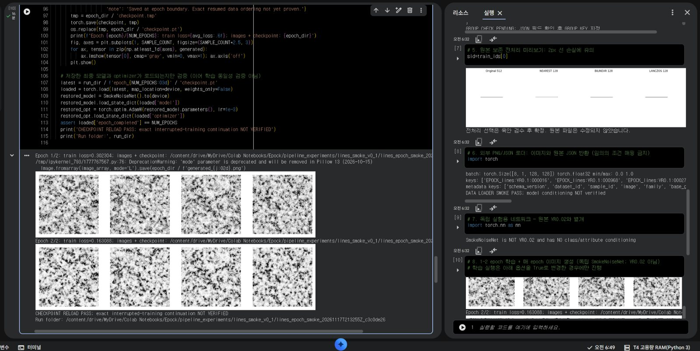

확인된 실행
- PNG·JSON 1,640쌍의 파일명 대응 검사 통과
- 학습 1,312개 / 검증 분할 328개, ID 중복 없음
- 배치 8 × 1 × 128 × 128, float32, 값 범위 0~1
- 2 epoch 학습, 매 epoch 생성 이미지 4장
- 각 epoch의 metrics.json·checkpoint.pt 저장 출력과 파일 목록 확인
- 최종 모델·optimizer 재로드 통과
PROJECT PROGRESS / 04
각 도구를 하나의 흐름으로 잇습니다.
1차 연결 시험 성공 · 조건 제어 구현은 다음 단계2026.11.18 업데이트 · v0.3 저장 실행 기록과 실제 화면을 확인했습니다. 작은 연결 시험의 성공과 작품 생성 성능은 구분합니다.
세부 작업을 눌러 내용을 펼쳐보세요. 진행 중인 작업은 펼쳐져 있습니다. 완료 표시는 해당 작업에만 적용됩니다.
선 이미지와 JSON을 읽고, 2 epoch 학습 후 매번 이미지를 생성·저장하는 연결이 실행되었습니다. 저장된 모델과 optimizer를 다시 불러오는 시험도 통과했습니다. 이번 성공은 작품 제작용 모델의 완성이 아니라, 데이터를 넣고 결과를 남기는 작은 연결 시험의 성공입니다.
실행 버전: EPOCK_PIPELINE_Lines_EpochPilot_v0.3.ipynb · 실행 시작 2026.11.18 06:32 KST (2026.11.17 21:32 UTC). 노트북 첫 설명에는 v0.2.0 표기가 남아 있으므로 파일명과 실제 실행 셀을 함께 기준으로 기록합니다.
Epoch 1: 0.302304
Epoch 2: 0.163088
학습 loss는 예측 노이즈의 평균제곱오차(MSE)를 배치별 평균 낸 값입니다. 백분율이나 그림 완성도가 아닙니다. 값은 낮아졌지만 검증 loss는 계산하지 않았으며, 일반화 성능이나 작품 품질 개선을 증명하지 않습니다.

SmokeNoiseNet은 Tiny-UNet VR0.02와 별개의 무조건부 실험 모델입니다. JSON이 함께 반환되어도 클래스·각도·선 종류를 모델 입력으로 전달하지 않습니다. 생성 목표를 선택하는 화면만으로 조건 제어가 완성되는 것은 아닙니다.
GROUP CHECK PENDING입니다. 파일 ID가 다르다는 것과 변형 원본군까지 분리되었다는 것은 다릅니다.다음 버전은 작품용 실제 학습과 생성 조건 제어를 목표로 합니다. 아래 항목은 요청·설계 범위이며 이번 v0.3에서 검증된 기능이 아닙니다.
2026.11.16 코드 검토: 기존 VR0.02는 절차적 도형 생성 경로를 사용하며, 새 1,640쌍의 선 이미지·JSON을 직접 읽는 로더는 아직 연결되지 않았습니다. 조건 분류·해상도·원본군 분할·체크포인트 호환성을 확인한 별도 실행으로 검증해야 합니다.
위 문단은 11월 16일의 VR0.02 검토 기록입니다. 이후 v0.3 독립 시험에서 외부 선 PNG·JSON 로더 연결을 확인했습니다. 이 결과를 VR0.02 본체 통합 완료로 간주하지 않습니다.
기존 코드에는 클래스와 12차원 수치 조건이 있지만, 스타일·카메라·여러 물체의 관계를 새 JSON 그대로 받아들이지는 않습니다. 기존 도형 회전값을 카메라 각도로 바꾸어 읽지 않습니다. 조건 인코더와 모델 입력 변경을 확인한 뒤 실제 지원 범위를 기록합니다.
서사를 단어나 JSON으로 변환하는 것만으로 제어가 생기지 않습니다. 모델이 학습한 조건만 연결하고, 지원하지 않는 동작·시점은 미지원으로 표시합니다. 통합 자동 생성 실행은 아직 검증되지 않았습니다.
✓ 이번 독립 시험에서 확인 · ● 제작·연결 중 · ○ 계획 또는 미검증. 화살표는 처리 순서이며 메뉴의 상하위 관계가 아닙니다.
● Tiny-UNet VR0.02 기반 본 학습
데이터 조건 인코딩 → 학습 → 조건별 생성
이번 SmokeNoiseNet 결과는 A 본체의 실행 증거가 아닙니다.
○ Stable Diffusion 기반 학습·LoRA 방향
기본 모델·학습 방법·설정 기록 → 학습 → 생성
별도 실행 검증이 필요하며 A/B의 원시 loss를 직접 비교하지 않습니다.
✓ 외부 선 데이터 → 무조건부 SmokeNoiseNet → 2 epoch → 샘플 이미지·JSON·체크포인트 저장 → 재로드
전체 시스템의 일부 흐름을 확인한 독립 시험입니다. 아래 서사·조건 제어·웹까지 연결된 실행은 아닙니다.
연결 목표를 설명한 흐름입니다. 전체 코드가 연결되어 자동 실행된 결과는 아직 이 사이트에서 확인되지 않았습니다.
CharacterDeform_for_tripo3d.ipynb는 전면·측면·후면 이미지를 분리하는 데이터 제작 도구입니다. 학습 코드는 아닙니다.
노트북의 용도와 실행 성공 여부는 별개입니다.
학습데이터 제작 현황 →최신 서사 연결 기준: 1 epoch = 작품 속 1일. 학습 관찰과 생성 샘플을 먼저 기록하고, 인간 자매의 성격과 게시 목적에 따라 서사 초안을 만듭니다. 게시 승인 상태를 구분하며 loss만으로 감정을 자동 확정하지 않습니다. 큰 사건·결말은 다음 프로젝트 범위입니다.
04 / CONNECTING THE WORK
자매가 각각의 아바타를 만들어 가는 과정. 수치와 생성 결과를 참고하되, 수치 자체를 감정이나 성장률로 단정하지 않습니다.
인간 자매의 큰 사건과 결말은 다음 프로젝트에서 다룹니다. 이번 범위의 어린 시절 대사와 아바타 제작 과정은 작가가 확정하며, 자매 장면은 실루엣으로 표현할 계획입니다.
A/B 모델의 입력 조건과 학습 설정은 실제 구현 단계에서 확인해야 합니다. 두 모델의 원시 loss를 그대로 비교해 우열이나 감정으로 해석하지 않습니다.
10월 보고서의 SD 1.5 CPT 표기와 후속 LoRA 학습 방향은 서로 구분해야 합니다. 보고서 원문은 당시 기획으로 보존하고, 새 실행 결과가 확인되면 해당 설정과 함께 별도로 공개합니다.
기존 변경·검증 기록VR0.02는 자유로운 자연어를 이미 이해하는 모델로 가정하지 않습니다. 선·도형·색·배치 등 실험에서 지원하는 구조화 조건에 맞춰 서사 장면을 변환하고, 지원하지 않는 요구는 별도로 표시합니다.
이 표현 규칙은 작가가 설계하는 연결 방식입니다. Tiny의 저장 파일 확장자나 키 이름을 맞추는 것만으로 기존 SD 모델·LoRA·도구와 완전히 호환되는 것은 아니므로 별도 검증합니다.
검증이 필요한 기술 가정 →